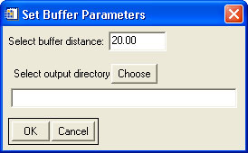

Using "Buffer LAS Files"
This tool is meant to buffer neighboring LAS files such that they will overlap geographically.

Usage:
- Select the input files to buffer.
- Input the desired buffer distance, in units of the horizontal coordinates of the data. This will be the amount by which the new files will overlap.
- Select the output directory. The output files will be saved in the new directory with the same name as the input files.
Back to LidarTools home page.
Notes:
- This tool requires data that are in the LAS format.
- This tool was developed for use with the filtering and rasterization tools, in order to overcome difficulties near tile seams. If the data files are buffered before further processing, the results should be seamless.
Comments?
• Idaho State University • Boise Center Aerospace Laboratory • 322 E. Front Street #240 • Boise, Idaho • 83702 •